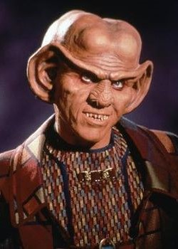

Star Trek: Deep Space Nine
Under construction!
Deep Space Nine was the third live-action Star Trek TV series, airing
from 1993 to 1999. Unlike previous Star Trek series', which were all
set on starships, DS9 is set on a space station. This station, Deep
Space Nine, was built by the Cardassians, a race of aliens who had
been occupying the nearby planet Bajor for decades. At the start of
the series, the Bajorans have just freed themselves from this brutal
occupation and have asked the United Federation of Planets to help
them run the station. Shortly after their arrival, the new crew of the
station discovers a nearby wormhole connecting to the gamma quadrant
tens of thousands of lightyears away. This is the only stable wormhole
in the galaxy and holds religious significance to the Bajorans, who
call it the Celestial Temple.
DS9 is less episodic than previous Star Treks, more like The X-Files,
with a combination of multi-episode/season plots and stand-alone
episodes.
The characters:
DS9 has by far my favourite cast of any Star Trek series. I love
literally every character and how many of them grow and change in
interesting ways. As much as I love Star Trek: The Next Generation
(it's a close second favourite after DS9) I was always a little
disappointed by how static the characters felt. By the end of the
show, the only character who felt any different to me was Data. Though
I also think that's part of why I find TNG so comfy to watch; it
doesn't change too much. I think because most episodes in DS9 are set
in one place rather than exploring the galaxy, and because there is
more of an overall plot connecting different episodes, the writers had
to spend more time on the relationships between characters.
Commander/Captain Benjamin Sisko
My all-time favourite captain (though he only becomes a captain a
few seasons in). Sisko is played by Avery Brooks, who also directed
several episodes, including two of my favourites, Rejoined and Far
Beyond the Stars. I like Sisko because he feels like a regular guy.
Unlike many other Star Trek Captains, he has a family that he's
close with. He's not an obsessive workaholic and has regular hobbies
like cooking and baseball. He's willing to break rules and do some
morally grey things for the safety of his crew and the galaxy.
"So... I lied. I cheated. I bribed men to cover the crimes of other
men. I am an accessory to murder. But the most damning thing of
all... I think I can live with it. And if I had to do it all over
again, I would." — Sisko, "In the Pale Moonlight," Season 6, Episode
19
Jadzia Dax
Chief Science Officer, played by Terry Farrell. Jadzia is a Trill,
aliens who are able to surgically join with and host long-lived
worm-like creatures called symbionts. After a host's death, the
symbiont can be transferred to another host, retaining all memories
and experiences. Jadzia's symbiont is named Dax and has had seven
hosts before Jadzia, including Curzon, a close friend and mentor to
Captain Sisko.
Jadzia is one of my favourite characters; I even named
my cat after her. Dax's experiences from
previous hosts make her character very interesting and unique. She
has a great ability to relate to and form relationships with
characters from a variety of alien backgrounds. She's also
canonically bi/pansexual, and is the first woman to kiss another
woman on Star Trek. Many fans also see her as a trans allegory due
to Dax's past hosts having been different genders.
And this scene.
Doctor Julian Bashir
The chief medical officer, played by Siddig El Fadil/Alexander
Siddig. Bashir comes off as self-absorbed at first, with many
characters finding him a bit annoying in the beginning. However, as
time goes on, he forms very close friendships with the rest of the
crew, especially Garak and O'Brien. Many fans have interpreted the
relationship between Garak and Bashir as romantic and Garak's actor
has confirmed that this was their intention. Both actors have even performed some
Garashir fanfic. Their relationship was also confirmed in the Star Trek: Lower
Decks game.
(after Bashir tells the story of The Boy Who Cried Wolf) Bashir —
"The point is, if you lie all the time, nobody's going to believe
you even when you're telling the truth."
Garak — "Are you sure that's the point, Doctor?"
Bashir — "Of course. What else could it be?"
Garak — "That you should never tell the same lie twice."
"Improbable Cause," Season 3, Episode 20
Elim Garak
Garak, played by Andrew Robinson, is a Cardassian tailor working
aboard Deep Space Nine. Garak is a very mysterious character, often
making up conflicting stories about his past and why he stayed
aboard the station after the occupation. Despite his secretive
personality, he develops a close relationship with Dr. Bashir, with
whom he enjoys discussing literature and various other topics.
I love Garak's personality and the way he talks. He has so many
great quotes. I remember the first time I watched DS9, I was so
fascinated by him and the mystery surrounding his past and
intentions. I also love the relationship between him and Bashir.
"Well, the truth is usually just an excuse for a lack of
imagination." — Garak, "Improbable Cause," Season 3, Episode 20
Major Kira Nerys
Played by Nana Visitor. The first officer and Bajoran liaison aboard
Deep Space Nine. She starts out being suspicious of Starfleet,
concerned that the Federation simply wants Bajor for themselves, but
eventually begins to trust them. She was a guerilla fighter during
the occupation and is very opinionated and resistant to authority.
She is also devoutly religious, following the Bajoran religion,
which worships the aliens living in the wormhole. This is fairly
unique for a Star Trek character of this time, which didn't usually
have religious main characters (that I can remember at least).
"Everyone has their reasons. That's what's so terrifying; people can
find a way to justify any action, no matter how evil." — Kira, "By
Inferno's Light," Season 5, Episode 15

Constable Odo
Odo is the chief of security, played by the late René Auberjonois
(who also played the skeleton in The Last Unicorn). He is a
shape-shifting alien whose origins are unknown at the start of the
series. Odo's natural state is a sort of liquid goop, but he is able
to convincingly take the form of many solid creatures and objects.
However, he struggles to perfectly emulate humanoid faces. His
personality is very rigid, with a strong sense of order and justice,
to a fault at times.
When I was younger, he was by far my favourite character. On more
recent rewatches, I find his character a bit frustrating, but I
still like him, especially his interactions with Quark.
“Commander, laws change, depending on who's making them. Cardassians
one day, Federation the next. But justice is justice.” — Odo, "A Man
Alone," Season 1, Episode 4
Miles O'Brien
The Chief of Operations, played by Colm Meaney. O'Brien also served
aboard the Enterprise as transporter chief during Star Trek: TNG.
He's married to Keiko O'Brien, with whom he has a daughter. O'Brien
frequently goes through traumatic events throughout the series, such
as being kidnapped and replaced with a clone or being imprisoned in
a mind prison for 20 years. He and Bashir have a close friendship,
often playing darts and tennis.
O'Brien is pro-union and we love him.
"(on his ancester, Sean Alocious O'Brien, fictional leader of the
1902 coal miner's strike) He was more than a hero, he was a union
man." — O'Brien, "Bar Association," Season 4, Episode 16
Worf
Worf had been Chief of Security in TNG before DS9. He joins the cast
in season four and is made Strategic Operations Officer. He is
played by Michael Dorn. Worf is a Klingon who was raised on Earth by
human parents after his parents were killed.
Worf was one of my favourite characters in TNG, so I was very
excited when he came to DS9. It was great seeing how he interacted
with the new characters. He managed to fit in with the existing cast
really well. I especially liked his relationship with Jadzia.
"Death to the opposition!" — Worf during a basball game, "Take Me
Out to the Holosuite," Season 7, Episode 4

Quark
Quark is played by Armin Shimmermin. Quark owned a bar on the
station during the occupation and was coerced into staying aboard by
Sisko. He is a Farengi, a race of aliens that typically value the
accumulation of wealth above most other things. Quark is often
coming up with elaborate, usually illegal, schemes to make money,
which puts him at odds with Odo. Despite this, he does have a few
heroic moments.
"Don't you get it? I'm not trying to rescue you. I'm taking you
along as emergency rations. If you die, I'm going to eat you." —
Quark to Odo while stranded on a mountain, " The Ascent," Season 5,
Episode 9
Jake Sisko
Jake is Captain Sisko's son and is played by Cirroc Lofton. He's
best friends with Nog, Quark's nephew, and the two frequently get up
to hijinks. Jake enjoys writing and playing
dom-jot.
I didn't like Jake at first because I thought he was kind of
annoying, but he grew on me after a few seasons. He is the main
focus of one of my favourite episodes, season 4, episode 3, "The
Visitor." It's an incredibly sad and touching episode that shows the
great relationship between Jake and his father.
Favourite Episodes:
The Visitor
Far Beyond the Stars
Bar Association
Misc stuff
Some cool DS9 stickers I got from
here. I also
got a poster of the artwork from the first sticker!